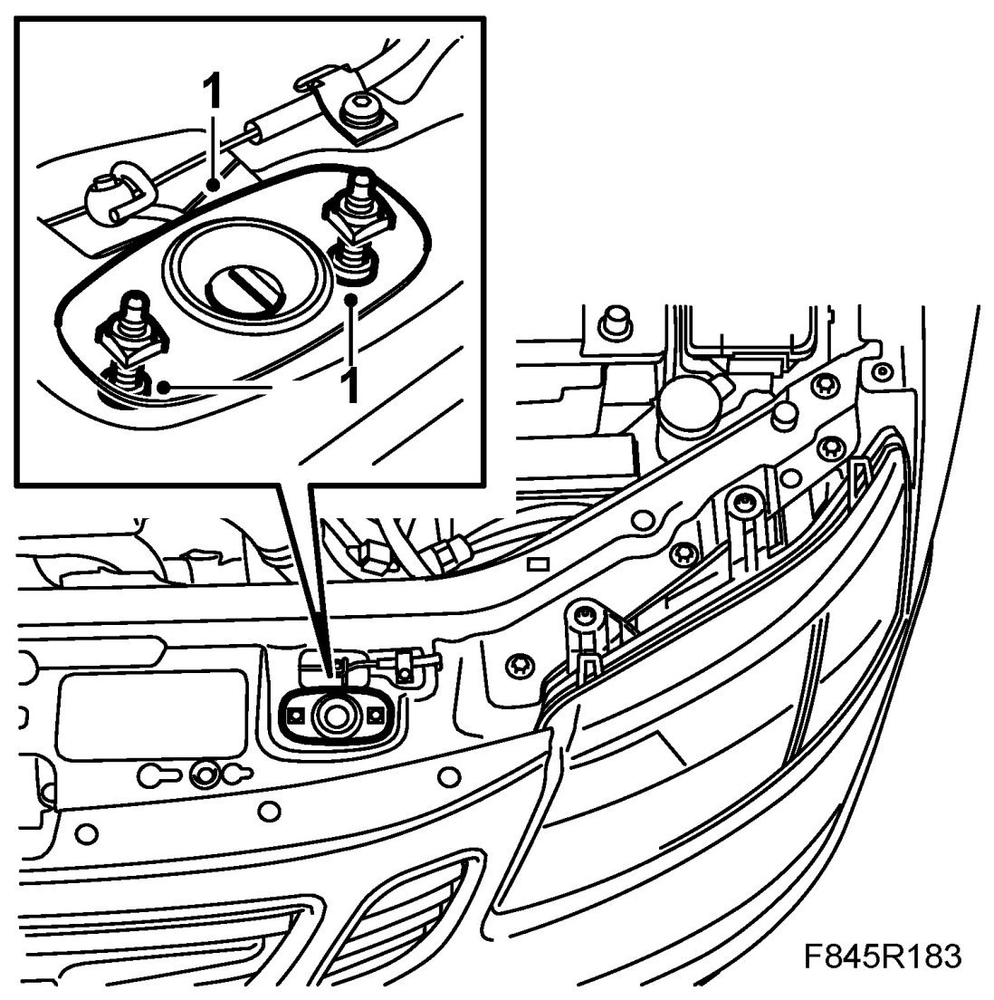

Bonnet Lock
Bonnet Lock
Removing
1. Remove the bonnet lock's bolts from under the upper radiator cross member.
2. Loosen the bonnet lock wire and lift out the bonnet lock.
Fitting
1. Fit the bonnet lock cable. Put in place the bonnet lock and fit the bolts.

2. Adjust the bonnet lock and check the alignment.